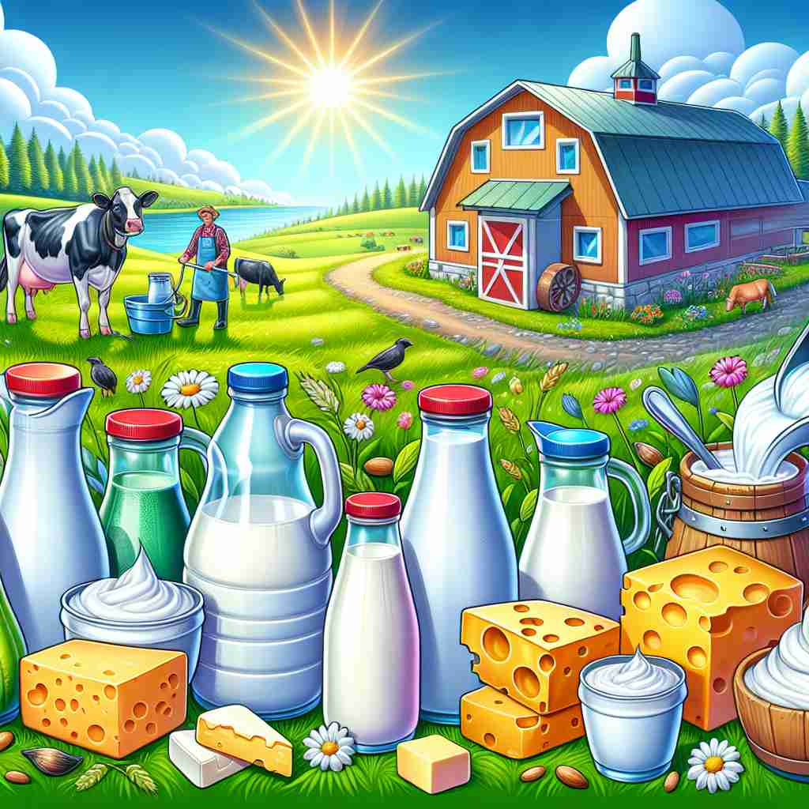

💬 The farmer sells fresh dairy products at the market. 农民在市场上出售新鲜的乳制品。

💬 The farmer sells fresh dairy products at the market. 农民在市场上出售新鲜的乳制品。
💬 The table is full of dairy products like cheese and yogurt. 桌子上摆满了奶制品，如奶酪和酸奶。
💬 The farmer sells fresh dairy products at the market. 农民在市场上出售新鲜的乳制品。
🧠 记住'dairy'的核心含义是'牛奶加工和储存的地方'。从这个核心概念出发，可以轻松理解它如何扩展到奶制品本身、销售这些产品的商店，以及描述与奶制品相关的形容词用法。想象一个农场的奶牛棚，里面不仅储存牛奶，还制作各种奶制品，这个画面可以帮助你联想'dairy'的各种含义。
🔈 ['deərɪ]
🗝️ n. a place where milk is kept and where butter and cheese are made 一个储存牛奶并制作黄油和奶酪的地方
🎭 在一个广阔的农场上，有一座忙碌的奶制品加工厂。工人在工厂里将新鲜牛奶倒入大型搅拌桶，开始制作奶油和奶酪。空气中弥漫着浓郁的奶香，这个场景描绘了“dairy”作为奶制品加工场所的含义。
💬 The farmer works in the dairy every morning. 农民每天早晨在奶牛场工作。
🌳 由词根 "dair-"（与牛奶有关）加上名词后缀 "-y" 组成，表示与牛奶或乳制品生产相关的场所或产品。
🕸️ 1.dairyman: 乳品工人 2.dairymaid: 乳品女工 3.dairy-free: 不含乳制品的
💡 可以联想 "daily milk"，因为 "dairy" 常与每天摄入的牛奶和乳制品相关，通过这种联想有助于记住它与牛奶生产有关的含义。